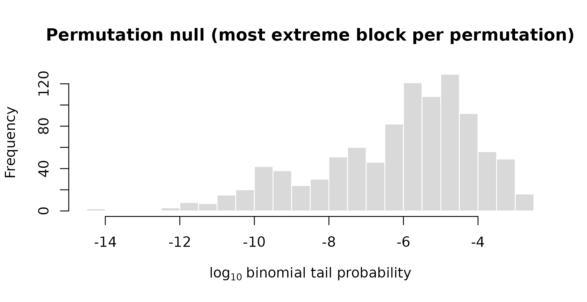
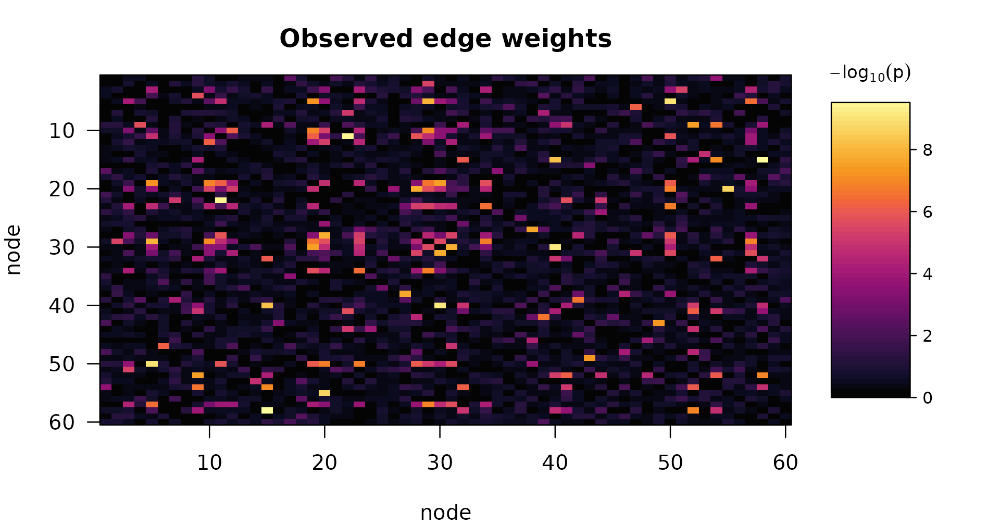
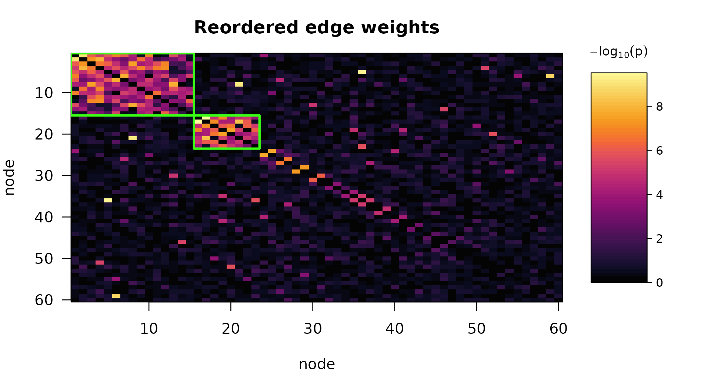

The question
A connectome study measures functional connectivity between every pair of regions and asks how it relates to something about the subject: a symptom score, a drug dose, an age. With 100 regions there are 4,950 edges, and testing each one separately means paying a multiplicity price that leaves almost nothing standing.
subnetr asks a structured question instead. Rather than
“which individual edges are associated?”, it asks “is there a
set of regions whose mutual connections are
associated?” — a subnetwork. That is usually the scientific question
anyway, and it is far easier to answer, because a subnetwork
concentrates many weak edge-level signals into one strong block-level
signal.
The pipeline
Four steps, each a single function.
-
edge_stats()turns subject-level connectivity into one number per edge: the evidence that this edge relates to the predictor, on a scale, adjusted for nuisance covariates. -
tune_subnet()chooses how aggressively to screen those edges, and how the search should trade block size against block density. -
subnet_extract()pulls dense blocks out of the screened graph by greedy peeling. -
subnet()does 2–4 and attaches a permutation p-value to each block.
In practice you call subnet() and it runs the rest.
Step 1: from data to a weighted graph
edge_stats() expects connectivity as an
n_subject × n_edge matrix whose rows are
vectorized lower triangles, or as an n_node ×
n_node × n_subject array.
set.seed(42)
n_subj <- 120
n_nodes <- 60
n_edge <- n_nodes * (n_nodes - 1) / 2
symptom <- rnorm(n_subj)
age <- rnorm(n_subj, 40, 12)
motion <- rexp(n_subj, 5)
fc <- matrix(rnorm(n_subj * n_edge), n_subj, n_edge)
fc <- fc + outer(motion, rnorm(n_edge, sd = 0.4)) # a nuisance effect
W <- edge_stats(fc, x = symptom, covariates = cbind(age, motion))
dim(W)
#> [1] 60 60
round(W[1:4, 1:4], 3)
#> [,1] [,2] [,3] [,4]
#> [1,] 0.000 0.277 0.300 0.140
#> [2,] 0.277 0.000 0.120 0.147
#> [3,] 0.300 0.120 0.000 0.698
#> [4,] 0.140 0.147 0.698 0.000Each edge is fitted as y_e ~ symptom + age + motion.
Nothing here loops over edges: the predictor and the connectivity matrix
are residualized on the covariates once, and the Frisch–Waugh–Lovell
theorem then gives all 1,770 slopes, standard errors and t-statistics in
a couple of matrix products.
P-values are computed on the log scale throughout, so evidence far past the point where a p-value would underflow to zero is still represented exactly.
Step 2: simulating a study with known truth
To see the method work we need a data set where we know the answer.
simulate_fc() plants subnetworks with a specified effect
size.
sim <- simulate_fc(n = 120, n_nodes = 60, cluster_size = c(15, 8),
f2 = c(0.15, 0.25), rho_in = 0.9, rho_out = 0.02,
seed = 2024)
sim
#> Simulated connectome study
#> subjects : 120 nodes: 60 covariates: 0
#> planted : 15, 8 nodes per subnetwork
#> f2 : 0.15, 0.25 rho_in: 0.90 rho_out: 0.020
#> method : fast signal edges: 151 of 1770The arguments describe a scenario rather than a mechanism:
-
f2is Cohen’s , the effect size at an affected edge. -
rho_in = 0.9means only 90% of the edges inside a planted subnetwork actually carry the effect. Real subnetworks are not uniformly affected, and a method that only works atrho_in = 1is not worth much. -
rho_out = 0.02scatters associated edges outside every subnetwork — the false positives any real screen has to cope with. - Node labels are shuffled, so the planted structure is not conveniently sitting in the corner of the matrix.
sim$truth holds the answer for scoring:
Step 3: extraction
subnet_extract() screens the graph at a threshold and
peels dense blocks out of it.
thr <- quantile(vech(sim$W), 0.95)
part <- subnet_extract(sim$W, threshold = thr, lambda = 0.6)
part
#> Greedy-peeling partition
#> nodes : 60
#> objective : generalized (lambda = 0.60)
#> threshold : 4.029 (5.0% of edges retained)
#> subnetworks : 6
#>
#> subnet size edges density
#> 1 13 43 0.551
#> 2 8 20 0.714
#> 3 4 2 0.333
#> 4 4 2 0.333
#> 5 5 3 0.300
#> 6 3 1 0.333
#>
#> background : 23 nodesThe algorithm repeatedly deletes the lowest-degree node and scores whatever remains after each deletion. The best-scoring set becomes a subnetwork; the nodes deleted before it become the input to the next round. It stops when the leftovers carry no supra-threshold weight.
What lambda does
The score for a set of n nodes carrying total weight
w, spanning m = n(n-1)/2 possible edges,
is
At lambda = 1 this is pure density, which favours small
tight cliques. At lambda = 0 it is pure total weight, which
favours large diffuse blocks.
sizes <- sapply(c(0.1, 0.3, 0.5, 0.7, 0.9), function(l) {
subnet_extract(sim$W, threshold = thr, lambda = l)$sizes[1]
})
data.frame(lambda = c(0.1, 0.3, 0.5, 0.7, 0.9), top_block_size = sizes)
#> lambda top_block_size
#> 1 0.1 42
#> 2 0.3 23
#> 3 0.5 13
#> 4 0.7 12
#> 5 0.9 5Two values of lambda are worth recognizing. At
lambda = 0.5 the score is w / n, the average
weighted degree, which is the classical densest-subgraph criterion. As
lambda approaches 1 the score approaches edge density, and
the extracted block shrinks toward the tightest small clique in the
graph – which is why min_size exists.
Step 4: inference
Extraction on its own will always return something — the
densest block of pure noise is still a block. subnet() adds
the test that decides whether it means anything.
fit <- subnet(sim$W, n_perm = 999, seed = 1)
fit
#> Predictor-associated subnetworks
#>
#> nodes : 60 edges: 1770
#> objective : generalized (lambda = 0.50)
#> threshold : 1.757 (10.0% of edges retained)
#> permutations: 999 alpha: 0.05
#> tuning : calibrated criterion
#>
#> subnet size edges density p_value significant log10_stat
#> 1 15 88 0.838 0.001 TRUE -69.6
#> 2 8 25 0.893 0.001 TRUE -21.6
#> 3 4 4 0.667 0.984 FALSE -2.9
#> 4 10 8 0.178 1.000 FALSE -1.1
#> 5 4 2 0.333 1.000 FALSE -0.9
#> 6 8 5 0.179 1.000 FALSE -0.8
#>
#> 2 of 6 subnetworks significant at FWER 0.05.
#> P-values are max-statistic permutation p-values and are already
#> family-wise-error corrected; do not adjust them again.Two ideas are doing the work.
The block statistic puts different-sized blocks on one
scale. A block of n nodes spans m
possible edges, of which k cleared the threshold. If edges
were scattered at random at the graph’s overall rate pi0,
the chance of seeing at least k is
pbinom(k - 1, m, pi0, lower.tail = FALSE). Because the
block’s size enters as the binomial sample size, a small dense block and
a large moderately dense one are directly comparable.
The null is generated by the same greedy search. Each permutation redistributes the edge weights at random, destroying subnetwork structure while preserving the marginal distribution of weights, and then reruns the whole extraction. Recording only the single most extreme block per permutation makes this a Westfall–Young max-statistic procedure: the p-values already control family-wise error across every block returned, and must not be adjusted again.
This also handles the selection problem that makes naive testing of a discovered cluster meaningless. The blocks were chosen by maximizing density, so of course they are dense; the null statistic is what that same maximization produces when there is nothing to find.
hist(fit$null_statistic / log(10), breaks = 40, col = "grey85", border = "white",
xlab = expression(log[10]~"binomial tail probability"),
main = "Permutation null (most extreme block per permutation)")
abline(v = fit$statistic[1] / log(10), col = "#d62728", lwd = 2)
The observed block sits far outside the null, which is why its
p-value is at the resolution floor of 1 / (n_perm + 1).
Did it find the right thing?
sapply(sim$truth$nodes, function(tn) {
max(sapply(fit$subnetworks[fit$significant], dice, b = tn))
})
#> [1] 1 1dice() is the Sørensen–Dice overlap: 1 means the
detected node set is exactly the planted one.

plot(fit)
par(op)The left panel is the matrix as measured; the right is the same matrix with nodes reordered so the extracted blocks sit on the diagonal, with the significant ones outlined. This plot is the fastest way to tell a genuine compact subnetwork from a diffuse smear that happened to clear a threshold.
Tuning, and why the null has to know about it
subnet() chose the threshold and lambda for
you:
fit$tuning
#> Threshold / lambda tuning
#> criterion : calibrated (25 permutations per grid point)
#> grid : 5 lambda x 5 threshold
#> selected : lambda = 0.50, threshold = 1.757
#>
#> Top grid points:
#> lambda prob threshold n_clusters lr z
#> 0.5 0.90 1.757 6 273.9 22.23
#> 0.7 0.90 1.757 8 238.5 21.02
#> 0.8 0.90 1.757 9 221.9 18.72
#> 0.6 0.90 1.757 8 278.3 16.58
#> 0.5 0.95 4.029 5 166.1 13.03Candidate settings are scored by the likelihood-ratio gain of a block
model over a homogeneous one. That statistic is not comparable across
thresholds as it stands, since changing the threshold changes the binary
data being modelled. tune_subnet() therefore standardizes
each grid point against its own permutation null, so grid points are
compared on a common scale under common random numbers.
Selecting parameters from the same matrix you then test creates a real problem. Under the global null, testing at the selected values with a null built only at those values roughly doubles the type-I error — a nominal 5% test runs at about 11%. The fix is to let every permutation run the same search:
fit$null
#> [1] "retune"
nrow(fit$null_grid)
#> [1] 25Each permuted data set is scored at every grid point, picks its own
(lambda, threshold) by the same rule, and reports the
maximum over the blocks found there. Measured over 400 null
replicates:
| null mode | nominal 0.05 | nominal 0.10 | nominal 0.20 |
|---|---|---|---|
"selected" (as published) |
0.100 | 0.177 | 0.315 |
"grid" (conservative) |
0.013 | 0.020 | 0.033 |
"retune" (default) |
0.035 | 0.087 | 0.207 |
If you fix threshold and lambda yourself,
no selection happened and subnet() uses the ordinary null
automatically.
Reproducibility
Every permutation seeds its own stream from its absolute index, so a
result depends on seed alone — not on n_cores,
and not on how permutations were split across workers.
Where to next
vignette("power-analysis", package = "subnetr") covers
sizing a study: turning an effect size and a target subnetwork into a
sample size.